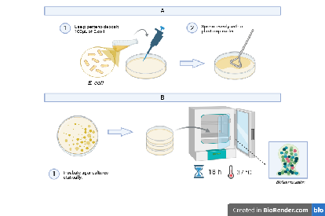
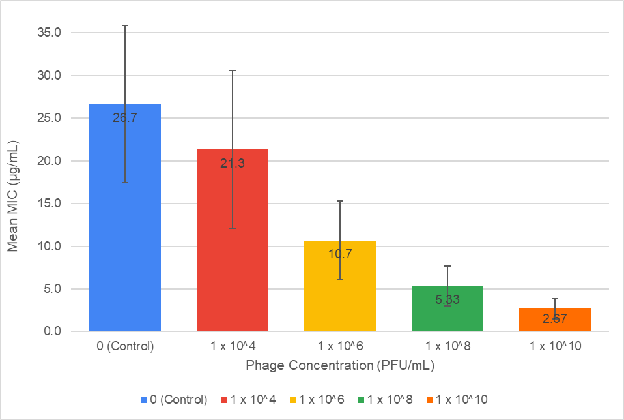

The Effects of Sub-Inhibitory Bacteriophage T4 Exposure on Ampicillin Susceptibility in Escherichia coli Biofilms
Rehan Ali · High Technology High School
Background
Biofilms are communities of bacteria that build a protective matrix of proteins, sugars, and DNA. This shield, together with slower bacterial metabolism, makes biofilm infections far harder to treat than free-floating bacteria. Escherichia coli is a common biofilm former and a frequent cause of persistent infections.
- Biofilms cause most chronic infections, including those on catheters and implants.
- Antibiotics such as ampicillin often fail inside the biofilm matrix.
- Bacteriophages can weaken biofilms and may act as a “priming” treatment.


Objective & Hypothesis
The objective was to determine whether exposing a mature E. coli biofilm to sub-inhibitory concentrations of bacteriophage T4 lowers the minimum inhibitory concentration (MIC) of ampicillin required to inhibit growth.
Hypothesis: if phage exposure weakens the biofilm, then less ampicillin should be needed to stop bacterial growth.